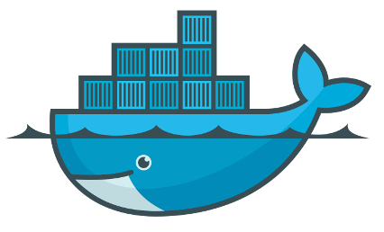

DOCKER CONTAINER

Apa itu container?
Container merupakan alat untuk mempermudah pengemasan dan mendistribusikan suatu hal dari satu tempat ke tempat lain. Sedangkan dalam konteks lingkungan linux (linux environment), kontainer dapat diartikan sebagai alat yang dapat dipergunakan untuk memberikan sistem yang terisolasi (isolated environment) pada level OS yang dijalankan pada satu induk linux kernel (host).
Terus bedanya sama Virtual Machin apa?

- Container lebih efektif dan ringan dibandingkan dengan VM (Virtual Machine).
- Container dapat melakukan efisiensi resource dengan sebaik - baiknya pada system.
Virtual Machine
- VM (Virtual Machine) menggunakan seluruh resource yang ada pada host, sedangkan Container hanya menggunakan sedikit resource dari host.
- VM menggunakan kernel tersendiri yang kemungkinan akan diproses langsung pada host.
Apa itu docker?
Istilah dalam docker
- Docker Deamon
- Docker Images
- Docker Container
- Docker Registry

Docker Daemon
Docker daemon berfungsi untuk membangun, mendistribusikan dan menjalankan container docker. User tidak dapat langsung menggunakan docker daemon, akan tetapi untuk menggunakan docker daemon maka user menggunakan docker client sebagai perantara atau cli.Docker Images
Docker images adalah sebuah template yang bersifat read only. Template ini sebenarnya adalah sebuah OS atau OS yang telah diinstall berbagai aplikasi. Docker images berfungsi untuk membuat docker container, dengan hanya 1 docker images kita dapat membuat banyak docker container.Docker Container
Docker container bisa dikatakan sebagai sebuah folder, dimana docker container ini dibuat dengan menggunakan docker daemon. Setiap docker container disimpan maka akan terbentuk layer baru tepat diatas docker images atau base image diatasnya.Docker Registry
Docker registry adalah kumpulan docker image yang bersifat private maupun public yang dapat anda akses di docker hub. Dengan menggunakan docker registry, anda dapat menggunakan docker image yang telah dibuat oleh developer yang lain, sehingga mempermudahkan kita dalam pengembangan aplikasi.